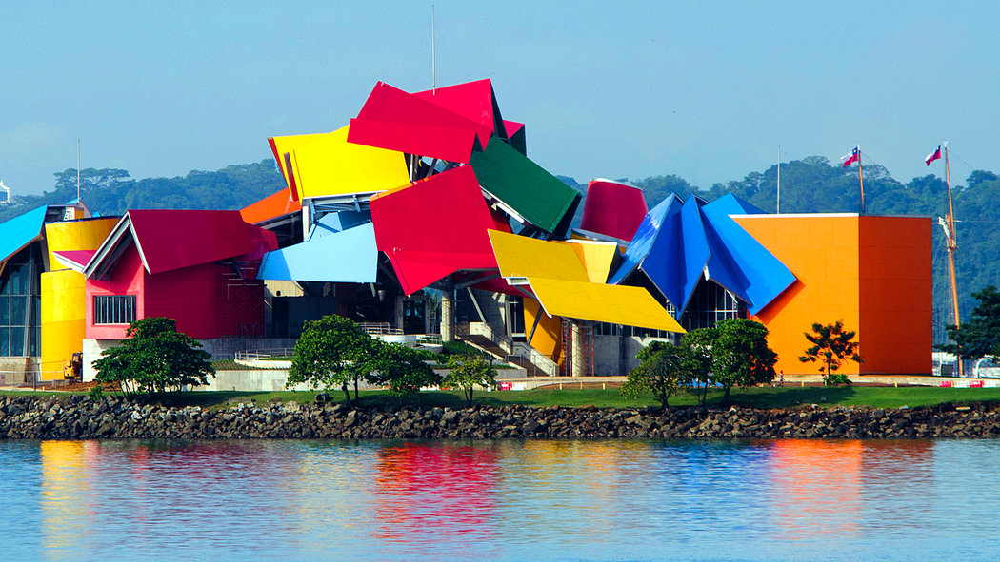

Biomuseo: Es un centro de interpretación e historia natural
El Biomuseo es una joya arquitectónica y natural ubicada en la Ciudad de Panamá, famosa a nivel mundial por ser la única obra en América Latina del célebre arquitecto Frank Gehry.
Es un destino cultural de clase mundial que destaca por su vibrante estructura multicolor y sus vistas espectaculares a la entrada del Canal de Panamá.
Tiempo de estadía recomendado: 1 días.
Sitios para visitar
- Océanos Divididos
- El Gran Intercambio
- Panamarama
Lista de precios de Entradas (USD)
- Adulto : $10.00
- Menores (5 a 17 años) $6.00
- Adultos mayores $5.00
- Menores de 5 años GRATIS
Imagen representativa

Video del destino
Puedes ver un recorrido virtual en el siguiente video externo: